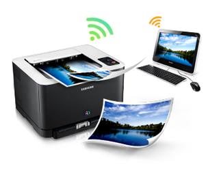
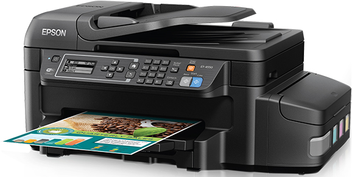
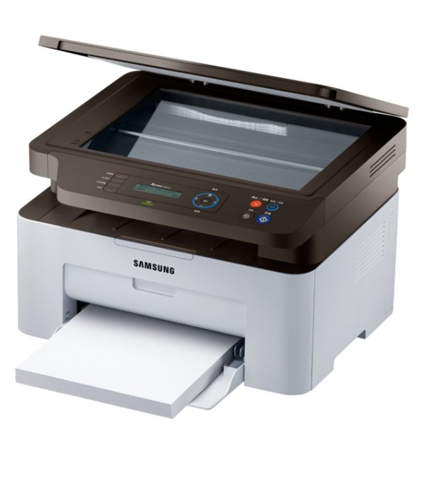
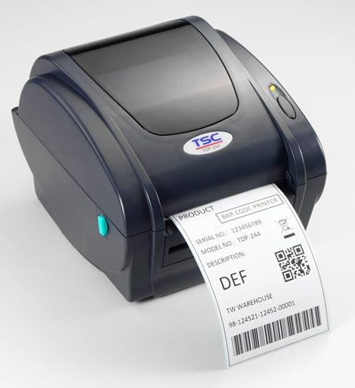
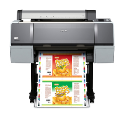

NON-IMPACT PRINTERS



- Non-Impact printer are those printer whose print heads do not strike to the paper to produce output are called Non-Impact printers.
- These printer use some other mechanism. It can be spraying of ink, heating of paper, some electrical or optical methods for producing paper output.
- These printers can produce graphical images with same efficiency as that of text images.
- They can produce output at very high speed and they do not produce noise while printing Because of non impact mechanism.
-
The only major problem with these printer is that they could not produce multiples of copies of output in one
Pass using carbon etc. because of lack of impact mechanism. But they are so fast that they can produce many copies
In seconds if required. They can produce color printing too.
- With some of the non impact printer special magnetized papers or chemical coated papers are required, which limits their use.
-
Various non impact printer are ink jet printer, Laser printer, Thermal printer, Electrostatic printer,Electrographic printer,
Magnetic printer etc.
Inkjet Printer

Inkjet printer work by spraying ionized ink on a sheet of paper. Magnetized plates in the ink's path direct the ink onto the paper in
the desire shapes.
Inkjet printers are capable of producing high quality print approaching that produced by laser printers.
A typical ink-jet printer provides a resolution of 300 dots per inch(dpi), although some newer models offer higher resolution.
The price of ink-jet printer is lower than that of laser printer. However, they are also considerably slower.
Another Draw back of ink-jet printers is that they require a special type of ink that is apt of smudge on inexpensive copier paper.
Laser Printer

A laser printer refers to a type of printer where the printer uses a Laser beam to produce image or text on a paper.
The main component of a laser printer are Drum {A photo sensitive drum known as organic photo conductive durm (OPC) } and
Toner {it is special type of powder}
A laser printer can print both in black and white and color. It can print with a speed of 4 to 16 page per minute(ppm) and
the resolution of 300 to 1200 dots per inch (dpi). It no produce any noise and give very fine quality print.
Thermal Printer

Thermal printers are printers that produce images by pushing electrically heated pins against special heat-sensitive paper.
Thermal printers are inexpensive and are used in most calculators and many fax machines.
They produce low quality print, and the paper tends to curl and fade after a few weeks or months.
Electrostatic Printer
Electrostatic non impact printer is least commonly used printer because of its limitation of requirement of specoial dielectric paper.
It uses the bit image formation method for printing the character on delectric paper. It also can not produce multiple copies
like other non impact printers.
It produces high quality printouts and its speed is very fast but the requirement of special dielectric paper limits its use.
The electrostatic printers use line of writing nibs or electric style pins for printing. These nibs are produce dots of charge
corresponding to the image on paper.
A toner used in electrostatic printer is fine powder (colored) with magnetic particles. A toner is used to from a visible image on paper
Electromagnetic and Electrographic Printer

Electrographic : - Electrographic/Electrophotographic pritners are very fast printers and they fall under the category of page printers.
They can produce document at speed of over 20000 lines per minute i.e. more than 250 page per minute (ppm).
The electrographic technology have developed from the paper copier technology. It produces output at a rate equal to photocopier.
Their cost is exteremly high and are economical only when hundreds of thousands of pages are to be printed per month.
Electromagnetic :- Electromagnetic printers use the method of developing charge using electromagnetic induction and a toner with
magnetic material particles is used to print the characters. They are also page printers and work at a very high speed.
They are less in use because of their high cost.